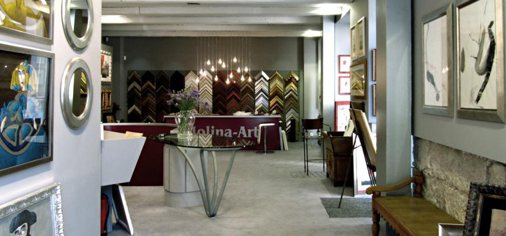

- 
-

-

Bienvenidos a Molina Art

Molina-Art abre sus puertas en 1995, apostando desde entonces por ofrecer a sus clientes una ámplia selección de Obra Gráfica y Original de firmas de reconocido prestigio, así como de nuevos autores. Estos años avalan la experiencia profesional de nuestro equipo, el asesoramiento y atención personal a nuestros clientes en la elección de Obra Artística, enmarcados y presentaciones.
Disponemos de taller de enmarcación propio y una gran experiencia profesional en el montaje de todo tipo de Obras de Arte, espejos, vitrinas y montajes especiales. Le asesoramos en la eleccion del estilo y materiales más adecuados a su gusto personal, poniendo a su disposición una amplia gama de productos.
Molduras
- Molduras de alta calidad y con gran variedad de colores y acabados: colores planos, oros y platas, envejecidos, decapés, metalizados, etc
- Molduras artesanales fabricadas manualmente según las técnicas más tradicionales, realizadas en maderas naturales, pan de oro, así como formatos especiales (círculos, óvalos ...)
- "Passepartouts" fabricados con papeles de alta calidad libres de ácidos.
- Variedad en cristales: brillo, mate y calidad museo.